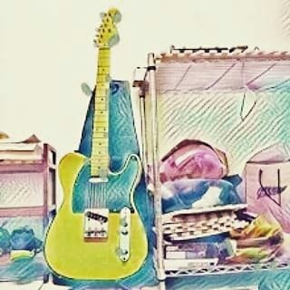

<a href="https://www.instagram.com/huangxuankai/"></a>
<hr />
<h1>關於我</h1>
<p>
其實我最近離職哈哈，想要轉職成為軟體工程師，近期在學習與協助架設網站，日後也會學一下python
<br />
工作之餘偶爾會碰點音樂，上面圖片有我作品和cover的連結

</p>
<p>

<h2>經歷</h2>
2016 ~ 2020 <a href="https://www.me.ncu.edu.tw/">國立中央大學 機械系設計與分析組 大學</a>
<br />
2021 ~ 2022 <a href="https://www.me.ncu.edu.tw/">國立中央大學 機械系固力與設計組 碩士</a>
<br />
2022 ~ 2024 <a href="https://www.me.ncu.edu.tw/">大立光 工程師</a>
</p>  
